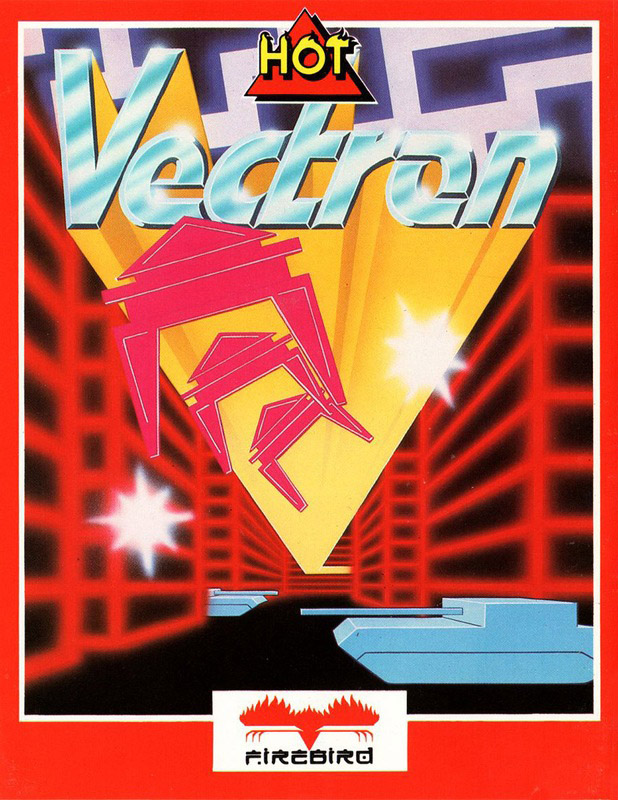
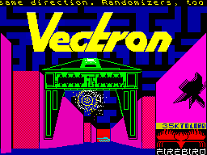
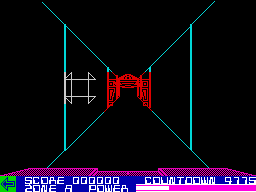

Vectron


{kind=link}

| Publisher: | Insight |
| Price: | £7.95 |
| Year: | 1985 |
| Source: | CRASH, Issue 24 |

The scenario that lies behind the second game from Insight bears more than a passing resemblance to Tron. Tron the film, that is, not Tron the game. You have been transported to a weird ‘sub-spatial’ dimension, and find yourself inside a computer at the helm of a fighting machine equipped with an energy shield and the obligatory Plasma Blasters.
Vectron is a game split into four sections. The action begins in a maze, displayed on the screen using vector graphics from the viewpoint of the pilot of the ship — in a similar way to Buggy Blast. You are at the controls of a craft that is incapable of stopping and moves around at a constant and very fast speed. As you approach the end of a corridor in the maze, it’s necessary to change direction very rapidly to avoid an energy-sapping collision. Up and down move a sight vertically over the screen while left and right govern the way your craft shifts at a junction as well as moving the sight horizontally. The laser, or plasma blaster, fires a pulse towards the centre of the gunsight and delivers a burst of energy that’ll zonk any enemies in view.

To clear the first section, all enemy craft must be destroyed. The maze is patrolled by sinister Randomisers — sort of inverted U shape craft that patrol the corridors. The randomisers tend to inhabit the border areas of the maze, flying around the edge section enclosing the maze. In the inner reaches of the maze lurk the fireball spitting tanks. Unlike the randomisers, they can shoot at you, though if you approach them from behind they’ll be unable to swivel their turret fast enough to total you.
While you’re whizzing about, if you wish to see where the enemy craft are, a stab at the bottom row of keys calls up a full screen representation of the maze. Displayed with character blocks of colour, the normal screen display still functions in the background and you can plan your route on the head-up map while continuing to drive through the maze. Upon the enlarged map your ship is shown as a white attribute square, randomisers are red, and tanks appear as magenta blocks.
Only one life is supplied, and your craft begins with a limited amount of energy. Bashing into walls or enemy craft depletes your energy status drastically. Extra energy, displayed as cyan squares on the map, is available. Unlike the enemy they stay stationary and to collect the life force you must shoot them. If, by accident, you fly over an energy globe, the globe disappears and you’ll be a bit nearer to death.

Once the baddies in the maze have been zapped, you have to return your ship to the portal located in the middle of the maze. As you approach it, a sort of stargate whizzes into view and zaps you into the second screen. Here you have to blast at the Rom Robot’s eyes with the laser as they flash. The robot, superimposed upon a starfield, spits globules of death at your spaceship. The energy shield remaining from the first screen is carried forward but the globes fired by the robot deplete it badly.
During the second phase, the ship’s map computer is destroyed and when you return to the main maze for phase three of the game you’re on your own, mapless. The idea is to reach the warp in the bottom right hand corner of the maze, through which you can make good your escape. The trouble is that the ship is placed randomly within the maze and some keen navigational skills are needed to suss out where you are. Two randomisers fly around the maze, just to make life more complicated.
The last screen is the escape section, displaying a rear view as you try to shoot the pursuing Randomisers and Tanks that are thrown at you while you try to run away. Zap them and you’re free, fail and it’s back to the title screen.
As well as your energy limitation, there is also a limited amount of time for your escape attempt: the time remaining is constantly shown on a countdown timer on the bottom left of the screen, and you’d better make good your escape if you want to fly again.
CRITICISM
‘Vectron is just about one of the best games I’ve seen for the Spectrum for eons, it really is a classic. Even the first screen alone would have made Vectron a classic for me but there are four very different sheets, each presenting a considerable challenge. The graphics are exceptional, the speed they move at really amazed me. Recognisers move in a truly outstanding way, keeping definition however close they get to you. Using the attribute file to overlay a map of the maze was an inspired idea. Mike Follin and Insight should go a long way with such a high standard of product.’
‘If you want a first class Tron game-of-the-film then look no further than this. Although diverging slightly from the main storyline of the classic computer film Vectron has many of its elements, like the baddies and the maze sequence. The sheer speed of the program is well impressive and the 3D graphics are THE best I’ve ever seen. Vectron is pretty hard, but is that sort of game which keeps you coming back for more. A real classic which should definitely appear at the bottom of your Christmas stocking.’
‘To begin with I wasn’t all that keen on this game, but after a few hours of practise I really started to get into it. My only gripe, apart for the initial difficulty of the game, is the fact that there isn’t a high score table or anything similar to tell you how close you’ve got to the end of the game. The use of graphics is very good, as is the use of sound — the tune is excellent. I greatly enjoyed playing Vectron, although I’m not sure it would offer much to the games player who likes to use his brains as well as his quick reactions. A first-rate shoot em up, though.’
COMMENTS
| Control keys: | Definable |
| Joystick: | Sinclair, Kempston, Cursor |
| Keyboard play: | Very responsive |
| Use of colour: | Excellent |
| Graphics: | Incredibly fast, and cunning |
| Sound: | Fab — great when amplified |
| Skill levels: | Gets harder as you go |
| Screens: | Four different sections to the game |
| General rating: | A brilliant arcade shoot em up |
| Use of computer: | 93% |
| Graphics: | 93% |
| Playability: | 92% |
| Getting started: | 85% |
| Addictive qualities: | 94% |
| Value for money: | 91% |
| Overall: | 92% |